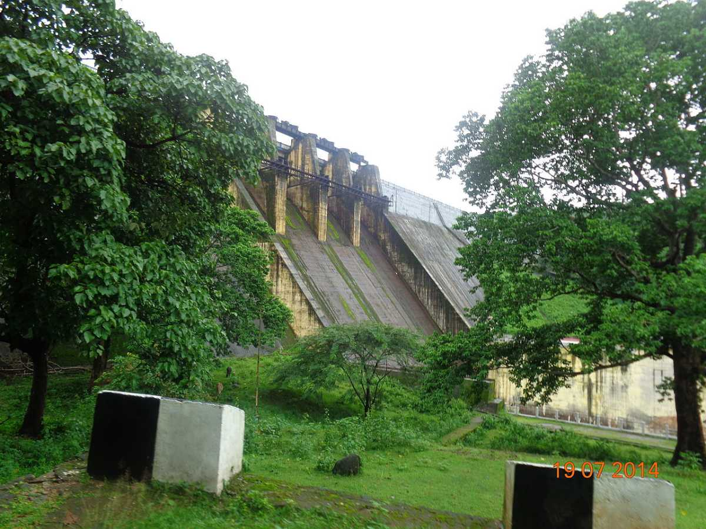

MAIN ATTRACTIONS
Athirappilly waterfalls
Located 60 km from Thrissur city, Athirapally Falls is a haven for flora and fauna alike. It is a popular picnic spot and the scenic beauty of the waterfall offers spectacular visuals for visitors.


Vadakkumnathan temple
The cultural capital of Kerala, the Poorams or temple festivals in Thrissur draw in thousands of people every single year as these carnivals encapsulate every single part of Kerala's rich heritage. These are a hotbed of folk art performances and heritage tours that will give you an in depth look into some of the grandest traditions of the State. From majestic elephants to colourful pulikali processions to the world renowned Thrissur Pooram,
Kerala kalamandalam
Kerala Kalamandalam, a deemed University of Arts and Culture, is a major centre for learning Indian Performing Arts, especially those that were developed in the Southern states of India, with a special emphasis on Kerala. It is situated in the village of Cheruthuruthy in Chelakkara, Thrissur District on the banks of the Bharathapuzha river. Kerala Kalamandalam has been currently functioning as a grant-in-aid institution under the Cultural Affairs Department, Government of Kerala.


Chavakkadu beach
A sea shore adorned with rare scenic beauty, the Chavakad beach is renowned as being one of the best beaches along the West Coast.
Chimminy dam
Also known as Chimmony Dam, it is situated near a village named Echippara in Mukundapuram taluka of the Thrissur district. The reservoir along with the Chimmony Wildlife Sanctuary is surrounded by hills of the Southern Western Ghats thereby making the area appear natural and scenic.
